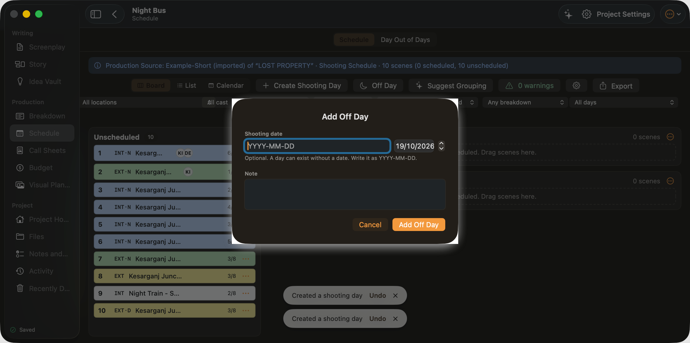

Filter by location, Filter by location (popupbutton, filter-location)
Filter by cast, Filter by cast (popupbutton, filter-cast)
Filter by day or night, Filter by day or night (popupbutton, filter-day-night)
Filter by scene length, Filter by scene length (popupbutton, filter-length)
Filter by scheduled state, Filter by scheduled state (popupbutton, filter-scheduled)

Created a shooting dayCreated a shooting dayWritingScreenplayStoryIdea VaultProductionBreakdownScheduleCall SheetsBudgetVisual PlanningProjectProject HomeFilesNotes and TasksActivityRecently DeletedSavedProduction Source: Example-Short (imported) of “LOST PROPERTY” · Shooting Schedule · 10 scenes (0 scheduled, 10 unscheduled)Unscheduled10 unscheduled1INT·NKesarganj Junction - Lost Property Office6/82EXT·NKesarganj Junction - Platform 31/83INT·NKesarganj Junction - Lost Property Office2/84INT·NKesarganj Junction - Lost Property Office4/85INT·NKesarganj Junction - Store Room3/86INT·NKesarganj Junction - Lost Property Office5/87EXT·NKesarganj Junction - Footbridge3/88EXTKesarganj Junction - Footbridge3/89INTNight Train - Second Class Compartment2/810EXT·DKesarganj Junction - Footbridge3/80 scenesNo scenes scheduled. Drag scenes here.0 scenesNo scenes scheduled. Drag scenes here.Night BusScheduleAdd Off DayShooting dateOptional. A day can exist without a date. Write it as YYYY-MM-DD.NoteAdd Off DayShooting dateOptional. A day can exist without a date. Write it as YYYY-MM-DD.Note